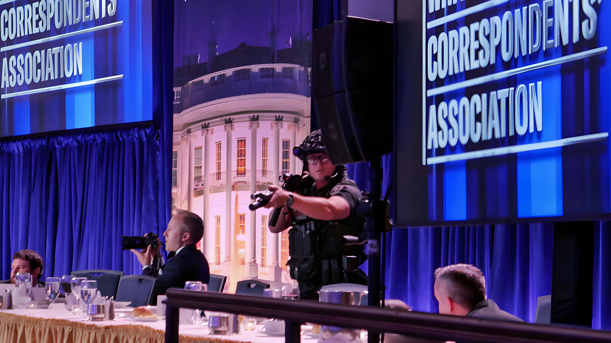

Le 25 avril 2026, un homme armé a ouvert le feu à l'entrée du dîner annuel de la White House Correspondents' Association, au Washington Hilton. Le président Donald Trump, la Première dame Melania Trump, le vice-président JD Vance et plusieurs membres du cabinet ont été évacués en urgence par le Secret Service. Aucun haut responsable n'a été blessé. L'incident constitue la troisième tentative d'assassinat visant Trump depuis 2024, et relance une fois de plus le débat sur la violence politique dans une Amérique profondément polarisée.
Le samedi 25 avril 2026, le Washington Hilton accueillait le dîner annuel de la White House Correspondents' Association (WHCA) — un événement de prestige réunissant traditionnellement le président, la presse nationale et diverses personnalités. C'était la première fois que Donald Trump y assistait en tant que président en exercice : il avait systématiquement décliné l'invitation lors de son premier mandat.
En fin de soirée, un individu a franchi en courant le point de contrôle de sécurité principal du hall du Washington Hilton, armé d'un fusil à pompe, d'un pistolet semi-automatique et de plusieurs couteaux. Des coups de feu ont été échangés avec les forces de l'ordre. Le suspect a été maîtrisé et interpellé à proximité immédiate de la zone de contrôle, à l'extérieur de la salle de banquet. Un officier de sécurité a été atteint par une balle mais protégé par son gilet pare-balles ; il a été hospitalisé puis libéré rapidement. Le suspect a lui-même été blessé au genou — non par balle — lors de son interpellation.
L'auteur présumé des tirs a été identifié par des sources proches de l'enquête comme Cole Tomas Allen, né le 11 avril 1995, originaire de Torrance, dans la région de Los Angeles. Diplômé en génie mécanique du prestigieux California Institute of Technology (Caltech) en 2017, il avait obtenu un master en informatique à la California State University de Dominguez Hills en mai 2025. Il travaillait comme tuteur dans une entreprise d'aide à l'orientation scolaire et développait des jeux vidéo de manière indépendante.
Allen n'avait aucun casier judiciaire et n'était pas connu des services de renseignement de Washington. Ses proches décrivent un homme discret et brillant, décrit par un ancien professeur comme « un très bon étudiant, toujours assis au premier rang ». Ses voisins à Torrance indiquent qu'il venait d'emménager dans le quartier six mois avant les faits.
« Ce soir, un lâche a tenté de créer une tragédie nationale. Il a sous-estimé les capacités de protection du Secret Service des États-Unis et a été stoppé dès le premier contact. »
— Matthew Quinn, directeur adjoint du Secret Service, 25 avril 2026Peu avant de se rendre au Washington Hilton, Allen a envoyé un courriel à des membres de sa famille, décrit par les autorités comme un « manifeste ». Il y indiquait vouloir cibler les responsables de l'administration Trump, en les classant par ordre de priorité du plus haut au plus bas rang hiérarchique. Il écrivait ne pas vouloir que les « crimes » de l'administration « souillent ses mains ». Son frère, alerté par ce message, a contacté la police du Connecticut dans la soirée du 25 avril.
Le procureur général par intérim Todd Blanche a confirmé que la piste d'un ciblage des responsables de l'exécutif était privilégiée à titre préliminaire, tout en soulignant que l'enquête sur le mobile était toujours en cours. Allen n'a pas coopéré avec les autorités lors de ses interrogatoires initiaux.
Allen envoie un courriel à sa famille décrivant son intention de cibler des responsables de l'administration Trump avant de se rendre au Washington Hilton.
Allen force le poste de contrôle principal du hall du Washington Hilton, armé d'un fusil à pompe calibre 12, d'un pistolet semi-automatique .38 et de plusieurs couteaux. Des coups de feu sont échangés avec les forces de l'ordre.
Allen est maîtrisé et arrêté à l'extérieur de la salle de banquet. Trump, Vance et les membres du cabinet sont évacués par le Secret Service. Un officier est blessé, protégé par son gilet.
La police du comté de Montgomery, dans le Maryland, est contactée par un proche d'Allen inquiet du courriel reçu. Les enquêteurs fédéraux sont alertés.
Des agents du FBI perquisitionnent le domicile d'Allen à Torrance, en Californie. Le suspect est inculpé par Jeanine Pirro, procureure fédérale de Washington D.C.
Trump a réagi sur Truth Social en publiant une photo du suspect au sol, menotté, après son arrestation. Il a déclaré à CBS News lors d'une interview accordée à « 60 Minutes » qu'il avait demandé à son équipe de sécurité de patienter un instant avant l'évacuation pour évaluer la situation. L'administration a par ailleurs saisi l'opportunité pour relancer le projet de salle de réception à la Maison Blanche : le procureur général par intérim a adressé un courrier à la National Trust for Historic Preservation soulignant que si ce projet avait été réalisé, le président n'aurait pas eu à se déplacer hors du périmètre sécurisé.
L'attaque du 25 avril 2026 s'inscrit dans une séquence préoccupante de violences politiques aux États-Unis. Après les tentatives d'assassinat de juillet et septembre 2024, c'est la troisième fois en moins de deux ans que la vie de Donald Trump est directement menacée. Le Washington Hilton entre ainsi dans l'histoire comme le deuxième site d'une tentative d'assassinat présidentielle après la tentative contre Ronald Reagan en 1981 dans ce même hôtel. Au-delà du cas individuel, l'incident interroge la capacité des institutions à contenir une polarisation politique qui, selon de nombreux observateurs, génère désormais une violence symétrique des deux bords du spectre. Il illustre également la pression croissante qui pèse sur les services de protection rapprochée, contraints de sécuriser des espaces publics face à des individus sans passé judiciaire ni signal d'alerte préalable.
On the evening of April 25, 2026, an armed man opened fire at the security checkpoint outside the annual White House Correspondents' Association dinner at the Washington Hilton. President Donald Trump, First Lady Melania Trump, Vice President JD Vance, and several Cabinet members were evacuated by the Secret Service. No senior official was harmed. The incident marks the third assassination attempt targeting Trump since 2024, once again raising urgent questions about political violence in a deeply polarised America.
On Saturday, April 25, 2026, the Washington Hilton hosted the annual White House Correspondents' Association (WHCA) dinner — a high-profile event traditionally bringing together the sitting president, the national press corps, and prominent guests. It was the first time Donald Trump attended the dinner as a sitting president, having declined every invitation during his first term.
Late in the evening, an individual rushed through the hotel's main security magnetometer checkpoint armed with a shotgun, a semi-automatic handgun, and multiple knives. Gunfire was exchanged with law enforcement. The suspect was tackled and taken into custody near the screening area, just outside the banquet hall. A Secret Service officer was struck by a round but protected by his bullet-resistant vest; he was hospitalised and swiftly released. The suspect himself sustained a knee injury during his arrest, though not from gunfire.
The suspected shooter was identified by law enforcement officials as Cole Tomas Allen, born April 11, 1995, from Torrance in the Los Angeles area. A mechanical engineering graduate of the California Institute of Technology (Caltech, class of 2017), he had completed a Master of Science in computer science at California State University, Dominguez Hills, in May 2025. He worked part-time as a tutor for a college-admissions preparation company and was an independent video game developer.
Allen had no criminal record and was not on the radar of Washington D.C. law enforcement. Those who knew him described a quiet, highly intelligent young man; a former professor called him an outstanding student who always sat in the front row. Neighbours in Torrance noted he had moved to the area only six months before the attack.
"Tonight, a coward attempted to create a national tragedy. He underestimated the protective capabilities of the U.S. Secret Service and was stopped at first contact."
— Matthew Quinn, Secret Service Deputy Director, April 25, 2026Shortly before arriving at the Washington Hilton, Allen sent an email to family members that officials described as a manifesto. In it, he stated his intent to target Trump administration officials, ranked from highest to lowest seniority, writing that he did not want the administration's perceived "crimes" to stain his hands. His brother, alarmed by the message, contacted police in Connecticut on the night of April 25.
Acting Attorney General Todd Blanche confirmed that, on a preliminary basis, investigators believed Allen was targeting administration officials, while stressing the investigation into his full motivation remained ongoing. Allen did not cooperate with authorities during initial questioning.
Allen emails family members outlining his intention to target Trump administration officials before making his way to the Washington Hilton hotel.
Allen charges through the main security checkpoint at the Washington Hilton, armed with a 12-gauge shotgun, a .38 semi-automatic pistol, and multiple knives. Shots are exchanged with law enforcement.
Allen is tackled and taken into custody outside the banquet hall. Trump, Vance, and Cabinet members are evacuated by the Secret Service. One officer is wounded, protected by his vest.
Montgomery County Police, Maryland, are contacted by a relative concerned about Allen's email. Federal investigators are alerted.
FBI agents execute a search warrant at Allen's home in Torrance, California. The suspect is charged by U.S. Attorney for Washington D.C. Jeanine Pirro.
Trump responded on Truth Social by posting a photograph of the handcuffed suspect on the hotel floor after his arrest. In an interview with CBS News for 60 Minutes, he said he had asked his security detail to wait a moment before evacuation so he could assess the situation. The administration also used the incident to revive the project for a White House ballroom: the Acting Attorney General wrote to the National Trust for Historic Preservation arguing that, had the ballroom been built, the president would not have needed to leave the secured White House perimeter for large gatherings.
The April 25, 2026 attack is part of a deeply troubling sequence of political violence in the United States. Following the assassination attempts of July and September 2024, this marks the third time in less than two years that Donald Trump's life has been directly threatened. The Washington Hilton now joins a grim historical record as the second site of a presidential assassination attempt after Ronald Reagan was shot in the same hotel in 1981. Beyond the individual case, the incident raises fundamental questions about the capacity of American institutions to contain a polarisation that — many analysts argue — is now producing violence from across the political spectrum. It also highlights the mounting pressure on protective services, forced to secure public venues against individuals with no prior criminal record and no intelligence footprint.